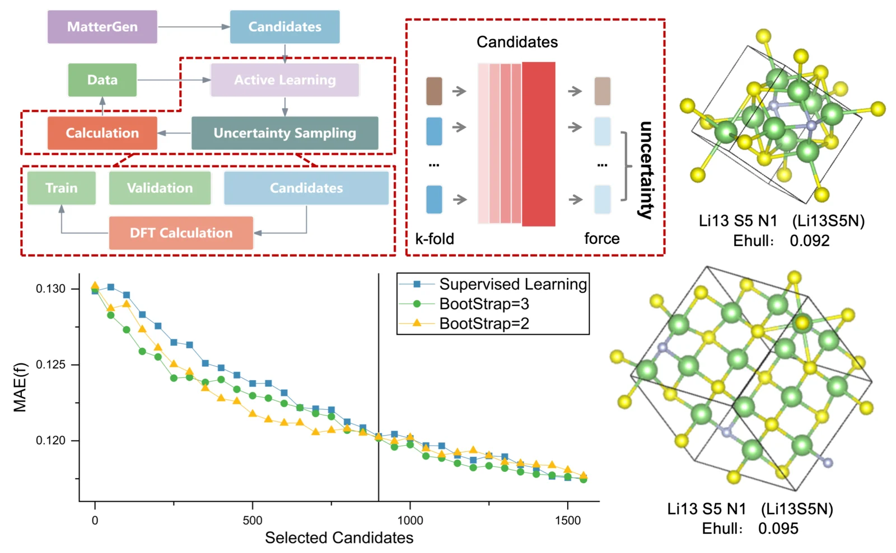

Superionic Conductor Materials Screening & Phase Prediction
Lead Researcher | Jan 2025 - May 2025
Advisor: Prof. Hong Zhu (SJTU)

Project Introduction
Using a small amount of data on superionic conductor materials in the Li-N-S system, the general potential model MatterSim is fine-tuned, and then the fine-tuned model is used to screen the generation model MatterGen to obtain stable materials in the Li-N-S system.
Personal Contributions
Constructed an active learning loop to iteratively update the model and data:
- Used a small amount of labelled superionic conductor material data to train and test MatterSim.
- Generated unlabelled superionic conductor structures using MatterGen.
- Loaded MatterSim as a structure prediction model and used the Query By Committee method to obtain its uncertainty.
- Performed DFT calculations on the data with the highest uncertainty and added it to the training data for the next round of training.
Achievements
- Selected for SJTU-Global College Research Internship Program 2025.